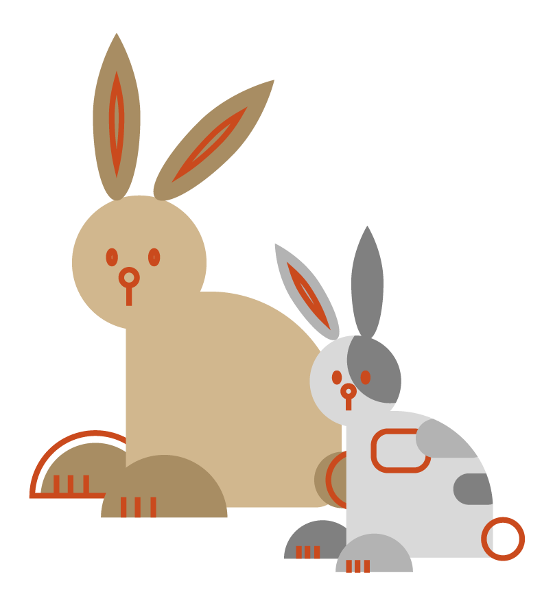
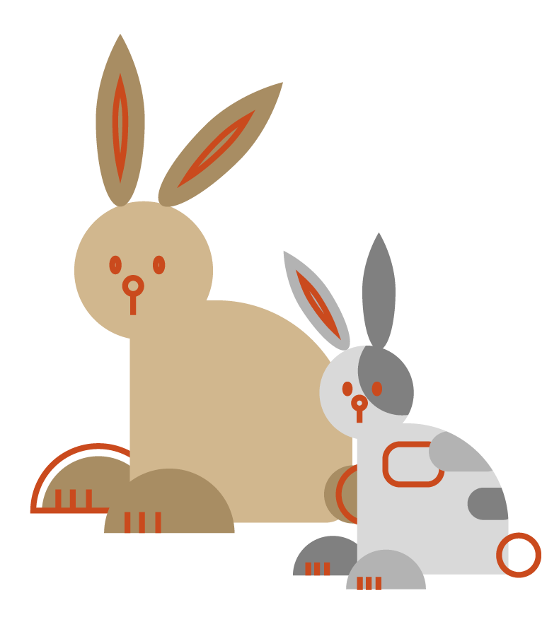

1877.07.02
Poet, Writer, Painter
German-Swiss
1877.07.02
Poet, Writer, Painter
German-Swiss
헤르만 헤세는 유년시절부터 자신의 이념과 대립하는 교육 체계, 집안 분위기와 갈등이 잦았습니다. 암울한 청소년기를 보낸 후 문학에 심취하며 안정기를 찾아갔는데 이러한 독특한 경험이 그가 집필한 책에 많이 녹아 들었고, 자연스럽게 자서전적 성향을 띈 책을 주로 출판해냈습니다.
그래서 그의 작품들은 그가 살면서 거쳐 온 자아 탐색의 치열한 과정을 시기별로 담고 있습니다. 또한 작품들은 시간의 흐름에 따라 자아에 대한 헤세의 태도 변화를 담고 있는 동시에 서로 같은 주제를 공유함으로써 연결성을 띄고 있습니다.
그럼 그의 세가지 대표작의 줄거리와 함께 헤세의 어떤 가치관이 투영 되었는지 알아볼까요?
모범생인 한스는 주변의 기대에 응하기 위해 사랑하는 것들을 포기하게 되고 원치 않지만 기숙 신학교에 진학합니다. 소심한 성격의 한스는 더욱 위축되고 억압적인 교육 방침 때문에 그나마 마음이 통하던 친구까지 잃게 됩니다. 그 후 여러 힘든 일을 겪게 되며 강압적인 교육과 결여된 사랑 아래서 한스가 죽음까지 몰리는 과정을 잔인하지만 현실적으로 담아낸 작품입니다.
헤세 또한 유년시절, 자연을 좋아했고 여러 문화를 공부하여 시인이 되고 싶었지만 아버지는 자신과 같은 목사가 되기를 바랐고 이로 인한 갈등이 잦았습니다. 그는 이런 강압적인 교육 체계를 비판하고자 했고 자신이 겪었던 좌절감을 주인공의 죽음으로 묘사하여 아이들에게 강요되는 사회의 억압성을 드러내고자 했습니다.
“지치지 않도록 조심해. 잘못하면 수레바퀴 아래에 깔리게 될지도 모르니까.”
 

싱클레어는 기독교 집안의 화목한 가정 아래서 자란 평범한 소년입니다. 하지만 가정과 같은 밝은 세계가 존재하는 반면 그 반대인 어두운 세계가 존재한다는 것을 깨닫고 이 둘 어느 곳에도 완전히 속하지 못해 방황합니다. 그 때 비범한 느낌의 전학생, 데미안을 만나며 이 방황에 대해 많은 것을 듣고 배웁니다. 그를 만나고 나서는 선악의 이분법적 세계의 탈피, 독립, 사랑과 숭배의 감정 등을 깨닫게 되고 스스로 자아에 가까워지기 위한 과정을 그려낸 작품입니다.
헤세가 성인이 되고 안정기에 접어들 때까지 내면의 변화를 가장 잘 담고 있고 서사적으로 표현한 것이 데미안입니다. 그는 어릴 적부터 양극성(밝은 것과 어두운 것 등)을 띄는 두 가지의 존재로 인해 내적으로 갈등하지만, 성장하면서 이 두 세계는 화합을 이루어야 한다는 것을 깨닫습니다. 헤세는 이를 싱클레어라는 인물에게 투영시켜 자아로 가까워지는 과정을 담았습니다.
“새는 알을 뚫고 나오기 위해 싸운다. 알은 세계다. 태어나려는 자는 하나의 세계를 깨뜨려야 한다. 알을 뚫고 나온 새는 신에게 날아간다. 신의 이름은 아브락사스다.”
브라만의 아들인 싯다르타는 어려서부터 총명했고 지식 탐구의 욕구가 넘쳤습니다. 친구 고빈다와 위해 사마나가 되었다가, 세존 고타마의 밑에서 가르침을 받으려다가, 세속에서 생활하며 직접 많은것을 경험해보기도 하며 세상의 진리를 깨우치기 위해 노력합니다. 결국 답은 단일성이라는 것을 강으로부터 깨닫고 열반에 이르는 과정을 담은 작품입니다.
헤세는 어려서 부터 동양 혹은 인도 문화에 관심이 많았습니다. 또한 1911년 동남아의 여러 나라를 여행하며 동양 문화를 접하고 그 경험을 바탕으로 해당 작품을 집필합니다. 이 작품은 싯다르타가 해탈에 이르는 과정을 통해 헤세 자신의 삶을 이상화합니다. 또한 기독교 가문과 교육 아래서 자랐지만 기독교의 가치만을 추구하지 않고 다양한 종교와 철학도 이해하고 수용하고자 노력했다는 것을 담고 있습니다.
“강물은 흐르고 또 흐르며, 끊임없이 흐르지만, 언제나 거기에 존재하며, 언제 어느 때고 항상 동일한 것이면서도 매순간마다 새롭다.”